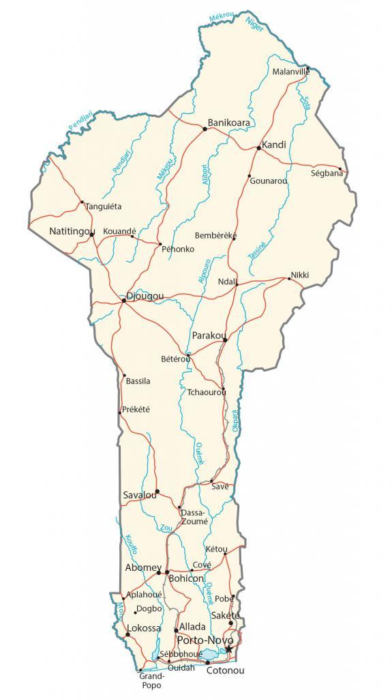

Benin is located in Western Africa, along the Gulf of Guinea to the south. It borders just 4 other African countries including Nigeria to the east, Togo to the west, Burkina Faso to the northwest, and Niger to the northeast.
The Bight of Benin is home to several large cities. This includes Cotonou, the largest city in Benin and the seat of government. But Porto-Novo is Benin’s capital, also in the southern region of Benin.
Go back home